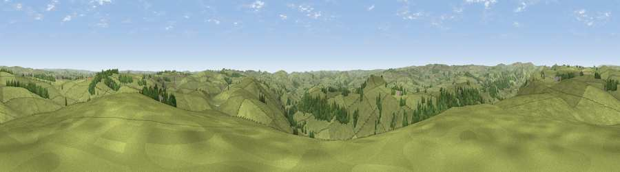

Pilsbury Hill
#16722 in England · top 22% of its area beats it · near CrowdecoteThe view, rendered

A 360° render of this exact spot computed from the terrain model, tree cover and land cover — summer colours, afternoon light, calibrated against photographs of famous viewpoints. Real trees, hedges and buildings will differ in detail.
The panorama
Grey silhouette: terrain skyline in each direction (720 bearings, Earth curvature and refraction included). Dashed green: skyline with trees (+15 m) and buildings (+8 m) as obstacles. Blue strip: how far the ground is visible on each bearing.
Where the view opens
Wedge length = distance to the farthest visible ground on that bearing (vegetation-aware). Rings at 10, 25 and 50 km.
What fills the view
89% grassland · 10% woodland ·
Angular shares of the visible panorama (visual magnitude), not map area. Landscape diversity 0.17 (0–1 Shannon).
Key numbers
More beautiful places nearby
The staircase of upgrades: each row has a higher view potential than everything closer. Driving times are estimates from straight-line distance, calibrated against real road routing — check an actual route before setting out.
| Place | Direction | Drive | Score |
|---|---|---|---|
| High Wheeldon | NW · 3 km | ~7 min | 56.5 |
| Viewpoint near Earl Sterndale | NNW · 4 km | ~8 min | 64.7 |
| Viewpoint near Earl Sterndale | NW · 5 km | ~10 min | 66.3 |
| Oliver Hill | WNW · 10 km | ~19 min | 66.6 |
| Axe Edge | WNW · 10 km | ~20 min | 69.7 |
| Viewpoint near Meerbrook | W · 12 km | ~22 min | 72.1 |
| Tissington Hill | SSE · 12 km | ~22 min | 75.5 |
| Viewpoint near Mow Cop | WSW · 27 km | ~43 min | 78.9 |
53.17256, -1.82083 · source: osm peak · position refined by local search. Computed location — check access rights before visiting.